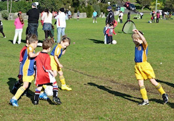
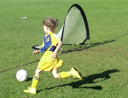
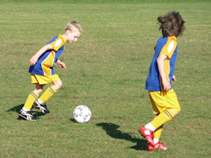
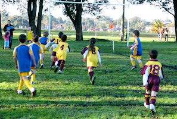
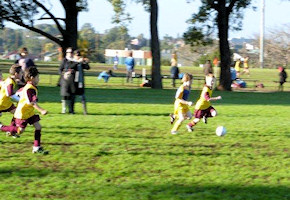

| Match Report - 02 July 2011 |
|
|
|
|
|
|
|
|
U6 Green
6 - 3
|
|


This week was certainly enlightening for the players and family of the U6 Green
team. The team were pushed, pulled, tripped and kicked by the Rangers and this
had several of our team upset and injured. The Putney team were warned by both
coaches to settle down and to play soccer, unfortunately the poor play did not
cease. The Putney coach even allowed the team to take a corner from next to the
goal and kick it straight in - interesting to say the least. Luckily the skills
and good sportsmanship of the North Ryde team shone through with a win and did
not react in any way during the game.
Excellent defence from Christian, Will and Blake. William also made some great
kicks in the midfield. Jasmine was not put off by the hard play and scored 3
excellent goals, Blake scored a couple of hard hitting goals and Will scored a
very skilful goal. We are very proud of this little team.
Player of the week this week was awarded to Blake for his determination and skill,
even after been carried off twice during the game he soldiered on.
- Sarah Robson
|
|
|
|
U6 Purple A
|
|

With almost half the team out with injury or lucky enough to be on holidays the
boys had no subs and worked hard today. They had to defend well right from the
start of the game. There was huge enthusiasm for kick ins and a few little
brothers looking to get in on the action, some future stars coming up!
Liam worked tirelessly in defense, Lachlan was focused and followed the ball.
Despite good defending the opposition scored a few times in the first half and
were hurrying us back on for the second half. Ethan scored a goal early in the
second half. Luke had a great save and Liam & Lachlan chased the ball well.
Ethan scored a second goal and then Liam and Luke showed superb team work for
Luke to score a goal just before the final whistle.
All of the boys did well to maintain focus, energy and enthusiasm throughout
the game.
Player of the match went to Ethan for his consistent kicking, focus and goal
scoring. Well done to all the boys.
- Nerradene Wolken
|
|
|
|
U6 Red A
2 - 5
|
|
School holidays had started and unfortunately our boys were already on holidays.
All Saints attacked and defended as a team while our boys were thinking about
their 2 weeks off school and what fun they were going to have. It wasn't all
bad. We did manage to sneak in 2 goals but had 5 scored against us.
All Saints Hunters Hill defended in packs so any break we made was quickly shut
down. We just could not find a weak link in the opposition and as the clock
wound down we could only hope that the bye would freshen us up for the game in
2 weeks time.
Player of the Week: Ben
- Garry Allwood
|
|
|
|
U6 White C
1 - 1
|
|
What a great game against Ryde Saints United! We drew 1 all and the boys had fun.
The pull-backs were out in force on both teams! Training is definitely getting
there!
- Lisa Mach
|
|
|
|
U8 Brown
0 - 3
|
|


Our first early start and the Holy Cross field was quite a paddock after the
rain. The team took to the field and maintained good positioning, Issak was
excellent in the goals and Liam was strong in attack and defence with some
excellent runs down the field and was unlucky not to convert what would have
been the goal of the day - Well done Liam.
Brooklyn was tackling and sliding through the mud in true form and the game
was very evenly matched. Sam was unlucky with several good shots on goal.
Declan was great in the midfield and Oliver and Jake positioned themselves
well in the forwards and showed their skills.
The team were happy to be coached by Neil today and he was equally excited
and proud of the team. Holy Cross broke through just before half time. In the
second halve Ben played goalie and made some excellent saves. He was unlucky
after catching a ball and dropping it the shot was converted by the holy cross
team and another goal was scored later in the match when visibility was limited
for Ben through the play, what a great effort as Goalie!
The team are really improving and showing that they are force on the field.
The player of the week this week went to Brooklyn for his endurance and strength
in attack and defence as well has being covered in mud through relentless effort.
- Sarah Robson
|
|
|
|
U8 Yellow
3 - 1
|
|
This week saw the North Ryde up against Beecroft at North Epping. Goal keepers,
Harry Grimes and Elliott Cunningham, both did a fantastic job in defending against
many Beecroft attacks at goal. All up a very entertaining and tight game with both
sides displaying great skill. Neither side was dominant, but North Ryde, courtesy
of Anuj did score the first goal two minutes into the match, which co-incidently
was his first for the season. Well done to Anuj. Play remains tight throughout
the first half, with Beecroft final getting the equaliser as half time is called.
Half time break concludes and play commences. North Ryde kick up a gear and
playing much more of a strategic game. Players are holding position and making
it very challenging for the opposition, Beecroft. After several more runs of play
down the southern side line, Anuj sends home the second of his match goals to put
North Ryde ahead with eight minutes of play remaining. Beecroft were not giving
up and continued to create a more opportunities to square up the score-line.
However, they did count on the strength of North Ryde’s defence, and more
importantly their goal keeper who proved to be impenetrable. One minute from
full-time and Jacob puts the result beyond any doubt. He receives a beautifully
timed pass and squeezes it in between the goal post, three or four Beecroft
players and the goal keeper, into the net.
Final score North Ryde three (3), Beecroft one (1)
Goal Scorers:
1. Anuj Savai (2), 2 minutes from commencement of play and again with eight
minutes to play;
2. Jacob White (1), one minute from full time.
Player of the Match - Jacob White
- David Watt
|
|
|
|
U9 Division 3
0 - 0
|
|
Round 13 was over at River Glade against Thornleigh who we originally had a 1-all
draw with. This was a hard fought contest against the two teams with both having
several attempts but neither side getting a goal in the whole match.
The boys defence was very solid for this game and they were showing real signs of
a good team with players constantly working with each other and looking for
passing opportunities to their team mates. Positioning was keeping our defence
strong and we were unlucky not to land one of our goal attempts and steal the win.
Another draw to the ever growing tally - but still a very good effort. Riley took
out the certificate.
- Darren Mason (Manager)
|
|
|
|
U10 Division 6
4 - 1
|
|
This week’s game was relatively close to home being fielded at Meadowbank at a
reasonable time of 9.15am against Hills Hawks. Our squad was at near capacity,
only missing our new recruit to soccer and manager’s son, Joe. It was my duty
to interpret coach Paul’s substitution list and organise the boys and girl for
the game. With a beautifully colour coded team sheet and clipboard I took to my
task with some trepidation but with the full support of the other parents I felt
that I could survive this task.
Our team took to the field full of enthusiasm and we dominated play from the
start but domination means nothing without converting chances into goals. Hills
Hawks had less of the ball but when they did get it they tried their hardest to
squeeze the ball past our 1st half keeper but Kan was up to the test and refused
to let that ball cross his line - he was superb!
Jarvis, Thomas, Jack and Hugh all did their best up front to get that illusive
first goal but it just did not want to come. It took our smallest striker,
Hayley, to correct this situation and right on half time she placed her foot in
the right spot and our first half domination resulted in a 1-0 scoreline at
halftime.
The team commenced the second half full of energy from the oranges and an
eagerness to go on with the job. Our defence held strong with James, Connor,
Nat, Andrew and Austin determined to keep the Hawks from coming too close to
Hugh in goals. Our midfield also joined in on the act with Liam Kan and Michael
helping to set up the forwards and run back to help in defence.
As the second half went on we decided a 1-0 lead was not enough and Jarvis, Kan
and Hayley decided that it was time to add another goal each, much to the
excitement of the North Ryde supporters. We held on to a 4-0 lead until just
before the very end when the Hawks were able to sneak a ball through the legs
of Hugh to score their only goal.
For this game - special mention to Michael for your well placed corners, Austin
for your big boot saving us in defence, and Andrew for your constant lack of
fear to use your head at anytime to head the ball. Man of the match was Nat who
stood firm in defence and did not let us down.
Well done team - it was a pleasure to watch you and see how far you have come.
Congratulations to Paul our coach and Adam our manager for what you have done!
- Margie Simpson
|
|
|
|
U11 Division 1
3 - 0
|
|
Following on from last weekend’s great result against West Pennant Hills, it was
time to back it up against Epping Eastwood who had proved to be tough opposition
earlier this season. And based on the 1st half, this game was to be no different
even though they only had 10 players on the day.
On a beautiful winter’s morning, North Ryde proceeded to dominate the game but
found the Tigers defence to be on top form - no one more so than the goalkeeper
who made quite a few good saves in the 1st half.
Eli was causing a lot of problems for Epping Eastwood with his speed and trickery
in & around the penalty area. On one great occasion, Eli dribbled through 3 players
only for the keeper to save the day.
Just before half time, the Tigers had a great chance in front of goals but
thankfully the shot went over the bar and the score remained 0-0.
Any nerves were calmed 2 minutes into the 2nd half. A great ball was played by
Eli from halfway which Dion expertly controlled and beautifully placed past the
advancing keeper.
From here, North Ryde started to boss the game and a great shot by Charlie from
the edge of the box was saved.
Around midway of the 2nd half, 2 more goals were scored within a few minutes to
put us ahead 3-0.
Sam was able to finish off even though under pressure after the ball had been
bobbling around in the penalty area.
Shortly after, Lachlan very coolly converted a rebound into the back of the net
and the 3 points were in the bag.
Some great passing & running off the ball was displayed and the defence (+Tim)
were on top form and kept the opposition scoreless.
It was another wonderful performance by the team which we hope will continue for
upcoming matches.
- Lennon & Robbie
|
|
|
|
U11 Division 3
1 - 1
|
|
North Ryde were slow to get going in the first half and had to defend a lot of
the time. Salim, Robert and Matt had to do a lot of work. In the second half we
went out with a bit more determination, but North Epping found some gaps too.
One of our defenders put out his arm in a reflex action, resulting in a penalty.
The North Epping kick would have been hard to stop for any goal keeper. Zac
tried to score himself, but didn't quite make it. Adam's great throw-ins helped
keep us moving forward.
Finally, Hamish crashed through several defenders into free space and scored
with a good kick into the corner of the net. Unfortunately, we couldn't find a
way to score another goal and had to settle for a draw, but it was an improvement
on our recent losses.
- Martin Borri
|
|
|
|
U11 Division 5
2 - 1
|
|
It was a sunny day at Campbell Park in West Pennants Hills, perfect for a soccer
match. When the match started we only had nine players, two of which were very
sick but we were determined to win no matter what.
During the first half we concentrated on being first to the ball and in doing so
that gave our forwards and midfielders lots of chances to shoot but we just
couldn’t score.
When we came back on for half time we had lifted spirits. Laurence, Luke and Saxon
passed the ball up the right hand side of the field and when Luke was out in the
clear Laurence passed and Luke scored the first goal of the game leaving the
scores 1-0 our way. West Pennants Hills and Cherrybrook’s FC had a big comeback
and dominated ball possession most of the time. They put us under enormous
pressure which got WPH lots of corners. Guillaume (goalie) had a great save. They
passed the ball in the middle of the goalie box. They finally scored that made
the score levelled (1-1).
All of our players ran even harder to cover the field. Lachlan got the ball from
the opposition and made a brilliant straight pass to Jack who was not marked;
Jack got the ball and smashed it into back of the net. Nicholas almost scored
two goals on a corner. Tom and Alvin defended well at the back. The score remained
2-1 our way till the end of the game. The reason why we didn’t score much was
because they had a very good goalie.
Today we had our most significant win in this tournament so far. Everybody put in
120% effort especially Guillaume (player of the match).
- Alvin Cheng
|
|
|
|
U15 Division 2
2 - 1
|
|
For the tenth game of the year, with a clear day and an 11:00am start, the boys
played at Cheltenham Oval at Cheltenham against Beecroft SC, who are currently
7th in the GHFA competition. Does this field ever have any grass?
Mitchell was away with a bad back, Lewis had injured his calf muscle the day
before and could not play, Harry was sick but still turned up to cheer his team
on! So we had a squad of 12 players.
They where many highlights, which are below in chronological order:
- Tom flicks ball to Daniel, goal shot
- Nat in goals today
- Ben switch to Kyle, corner to NRS, Tom takes corner
- Kyle to Kevin, goalie keeper just clears shot
- Manav good throw in to Hayden
- Ben makes a strong header up to Hayden
- Chris great kick from standing still position and clears the ball away
- Daniel head to Tom, to Hayden (nice move)
- Ben kicks ball into goal box, Kevin lets it through, goal keeper clears
- Tom corner to Hayden, shoot cleared
- Nat strong run out to get ball
- Cameron strong, long throw in!
- Alex takes header off goal kick, strong header!
- Tom (LHS) cross, Goalie drops the ball, Kevin kicks it in. 1-0
- Tom kicks the ball back to Hayden, nice kick but edged wide. NRS corner
- Ben takes corner, Daniel header just wide of the goal.
- Cameron kicks ball across goal, Kevin almost got there!
- Manav chase the ball to goal keeper, pressure on goalie who drops ball out, corner to NRS taken by Ben
- Tom excellent late cross, Kevin lines it up but just misses
- Alex big left foot clear
Half Time, to this point of the game it looked like NRS was in charge, can we
continue this pressure? Paul advises the boys to be more aware of the bouncy
field and keep up the pressure!
Then:
- Beecroft nice cross into our goal box, cleared to attacker in front of the goal box. Excellent big kick and goal to Beecroft. 1-1
- Tom cross, goalie drops it, Daniel shoots just wide
- Daniel flicks the ball up and over, Kevin put pressure on Goalie
- Free kick to Beecroft just outside our goal box, Nat knocks the ball forward and out of the Goal box, stopped Beecroft from taking the lead.
- Chris runs and dribbles the full length of the field and shoots, just wide.
- Cameron, free kick to goal keeper but good kick
- Tom pushes through passes to Daniel, waits then passes the goal keeper. 2-1
- LHS side move, Alex big pass to Tom, defender down, goal kick to goal keeper
- Manav asserts himself, puts pressure on Beecroft back which forces him to kick it out.
- Luke was pushing his weight around and making the Beecroft attackers work hard, great and sustained effort for the whole game!
- Beecroft no 2 pushes Daniel out of the way, free kick
- Cameron takes free kick, wide
- Chris covers the whole field again with one of his typical runs, gets a corner for his efforts
- Referee blows the whistle
Lewis presented Manav with his belated cup cake for last week player of the match.
The player of the match this week was Nat, well deserved after his goal and match
winning save!
I would like to thank all the parents who came to support our team... you do make a loud difference!
- Joe Rosenfels
|
|